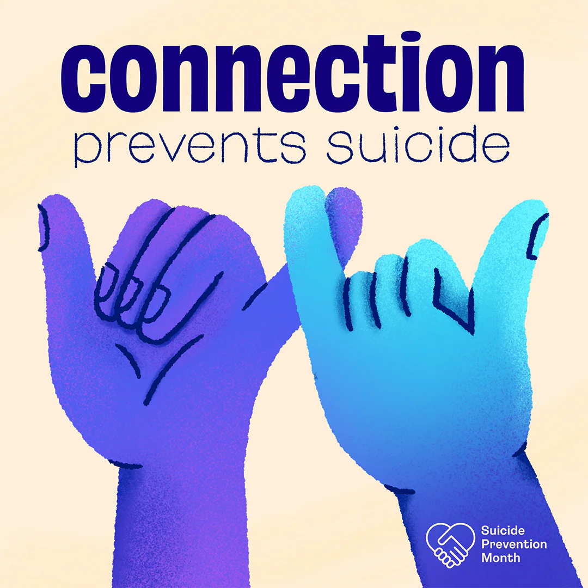
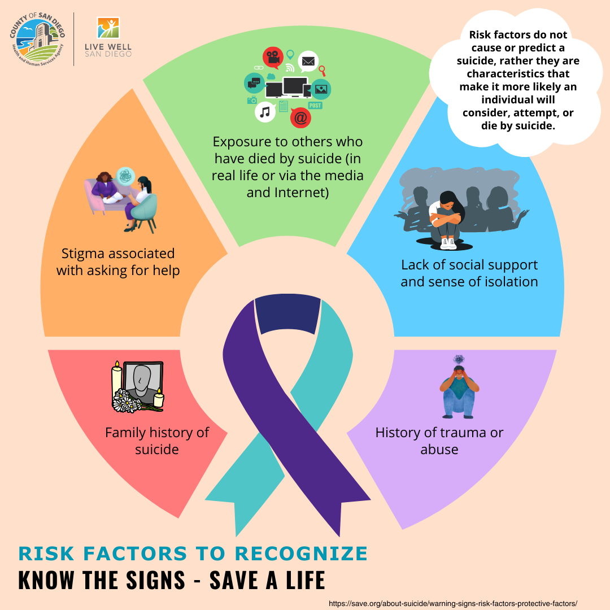
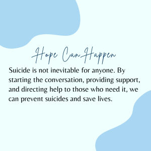

Suicide has become one of the leading causes of death in the United States. The Center for Disease Control and Prevention estimates that suicide was responsible for 48,000 deaths in 2021. In 2021, an estimated 12.3 million adults seriously thought about suicide, 3.5 million made a plan, and 1.7 million attempted suicide.
In a lot of cases, suicide can be prevented. It is important to learn the warning signs and risk factors, which can include change in personality, depression, recent life crisis, self-harm behavior, and making comments about wanting to die. If a loved one talks about suicide, take their words seriously. Encourage them to seek professional help and listen without judgement.


| Resource | Contact Information |
|---|---|
| Emergency Services | Call 911 |
| 24/7 Suicide & Crisis Lifeline | Call or text 988 or chat online at lifeline.org |
| Crisis Textline | Text TALK to 741-741 or chat online at crisistextline.org |
| Veterans Crisis Line | Text 838255 or chat online at veteranscrisisline.net |
This can be challenging and painful time for you. Grief from a suicide loss is complicated. While there is no right or wrong way to grieve, sometimes the grief can be overwhelming. You may feel that you need additional assistance. Don't be afraid to ask for help from a grief counselor or find a support group. Asking for help can be the bravest thing you do.